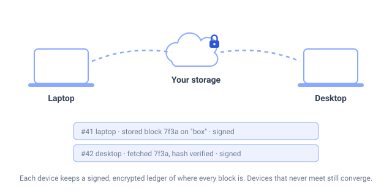
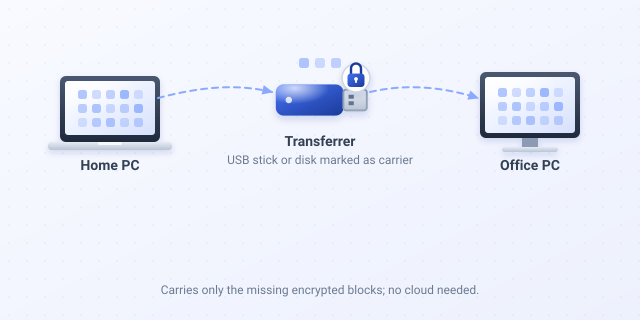
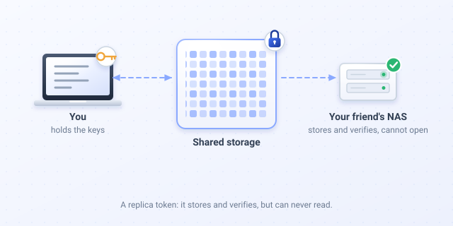
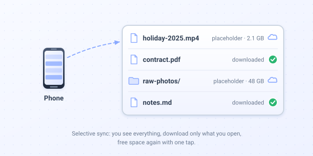
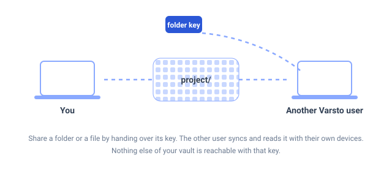
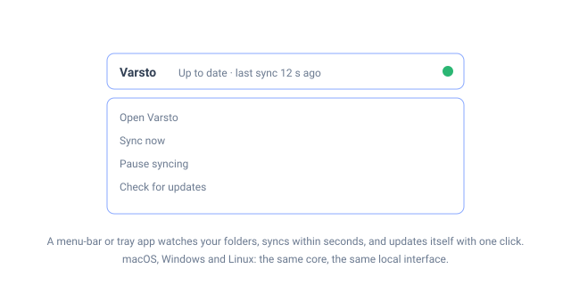
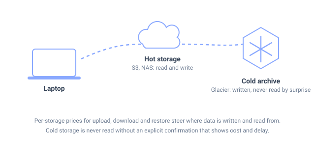
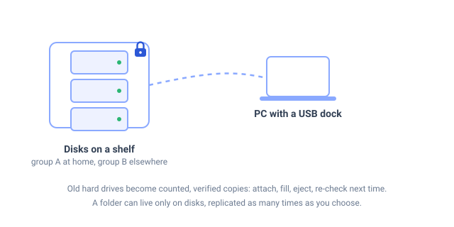
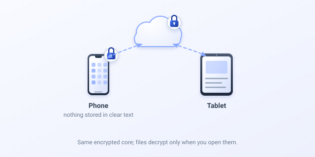

Features
Varsto is built around one idea: your files live on devices and storage you choose, every copy is ciphertext, and the app keeps honest, signed bookkeeping of where every block is. The features below follow from that. Items marked alpha-0 exist today; the rest are designed and documented, not built. The Use cases page tells the same story from the user's side, one situation at a time.

Devices that are never online together still converge alpha-0
There is no server. Each device writes encrypted blocks into storage you own and, next to them, a signed and encrypted ledger of what it did. Another device reads the ledger when it reaches the same storage, verifies the signatures and knows what exists, where it is and which copies were checked by someone else. varsto fsck --verify re-hashes every object and reports claims the storage cannot back. A device restored from an old backup is detected and fenced.
Use case: a laptop that is on the road for a week and a desktop at home. Both write to the same bucket or NAS share whenever they can; they never need to be on at the same time.

Transferrer: a disk that travels between two devices alpha-0
Mark a USB stick or an external disk as a transferrer. It only receives the encrypted blocks that the other device still lacks, and once both ends hold a block it is removed from the stick. For gigabytes of video between home and office this is faster than any upload, and it works with no internet at all.
Use case: edit footage at the office, carry the stick home, plug it in; the home machine catches up in minutes and the stick empties itself for the next trip.

Untrusted replicas: backup space you do not have to trust alpha-0
Give a friend, a relative or a rented box a replica token. Their device copies your encrypted objects from a shared location to its own disk, verifies every hash, and reports the copies into your ledger. It never receives a key that could open anything; it learns object names and sizes, exactly what a storage provider learns. Two users can host each other's backups this way.
Use case: you and a friend each keep a copy of the other's vault on a NAS in your homes. Neither can read the other's files; both see in their own app that the copies exist and are verified.

Selective sync with placeholders alpha-0
Every device can keep a folder in selective mode: the full tree is visible as placeholders, a file is downloaded when you ask for it, and Free up space turns it back into a placeholder once it is safely stored elsewhere. Placeholders are never mistaken for deletions. Operating-system integration (Finder, Explorer, Files) comes later; the mechanism is the same as in Resilio Sync's selective sync.

Share a folder with another Varsto user alpha-0
Sharing is key sharing: the owner hands over a token with the folder key, the recipient accepts it on their own device and syncs the folder through storage both can reach. Their devices write their own signed ledgers under that folder key, so the owner sees their copies too. The token opens that folder and nothing else of the vault. Key exchange over a secure channel, invitations with QR codes and revocation are the next steps.

A real background app on macOS, Windows and Linux alpha-0
A menu-bar or tray app runs the background service, watches your folders and syncs changes within seconds, with a periodic catch-up for changes made elsewhere. The same small binary provides the command line and the local interface in your browser, served only to your computer. Updates: one click in the app, or varsto update, with a checksum check.

Cold storage and cost-aware placement alpha-0, partly
Any directory is a storage today; S3-compatible buckets and rclone remotes follow. Each storage carries its own prices for upload, download and restore, so the app knows where a read is cheap and where it is expensive. Cold storage such as Glacier is written but never read without an explicit confirmation that shows the cost and the delay. Alpha-0 implements the never-read rule; the price model and S3 are in the plan.

Old disks on a shelf as counted, verified copies designed
Attach a disk from a USB dock, let the app fill it with the data that has the fewest copies, eject it when told, and store it anywhere. Next time it is attached the app verifies it, repairs what rotted and loads what is new. Disks belong to groups and places, so a policy can require one copy at home and one elsewhere. A folder can be kept only on disks, replicated as many times as you choose, with no cloud copy at all.

Mobile apps that keep nothing in clear text in progress
Android and iOS run the same encrypted core. Files stay encrypted on the device and are decrypted when you open them; thumbnails are generated once, encrypted and shared with your other devices. The Android alpha is a sideloadable APK; iOS needs a Mac to build and will follow.
Also in the design
- Post-quantum hybrid cryptography everywhere a public key is used, so that data stored today stays private for decades. Alpha-0 signs with Ed25519 only; every object carries an algorithm identifier so the switch needs no rewrite of your data.
- Security keys and Strongroom folders: folders that open only with a touch of your FIDO2 key, enforced cryptographically, not by a dialog.
- Durability policies with alerts: "at least two cloud copies and one at home, verified within 30 days", and the app tells you before it can no longer be true.
- Peer-to-peer transfer on the local network, torrent-style, with every block encrypted.
- A recovery kit you keep on paper or metal, in several places, and test once a year.
- An MCP server so an AI assistant of your choice can organise files and answer "where is this cheapest to keep?" with only the access you grant.
Every design document on the Docs page says which parts exist. Nothing has been audited yet.